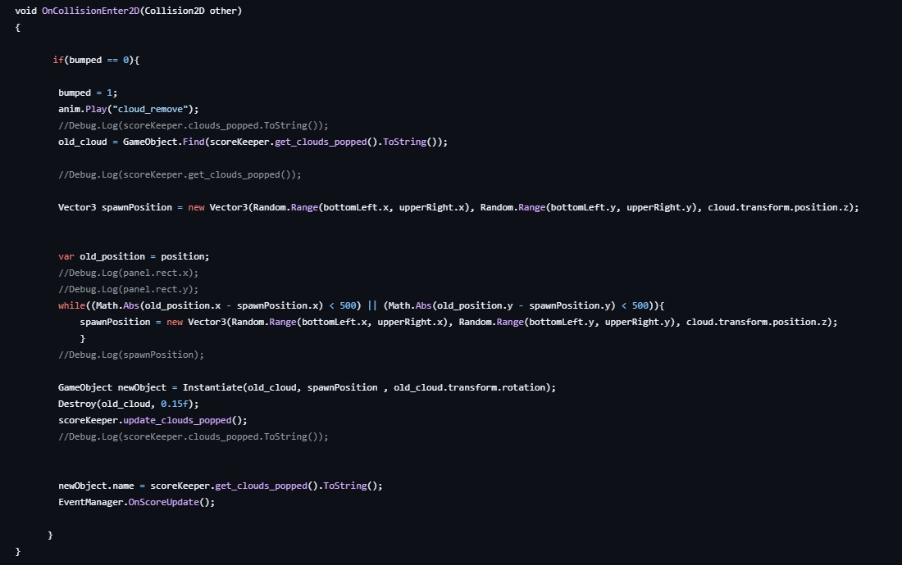
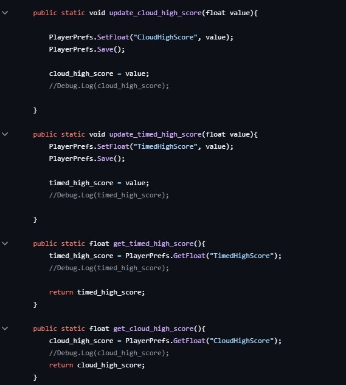

Apple App Store
Lofi Dragon App
Gameplay Video
Github Information
Github
Game Overview
Overview
LofiDragon is a Unity2d game programmed in C# with assets drawn and animated in Adobe Fresco. It is a relaxing game with three game modes where the player clicks on a falling star to bounce it to avoid it falling and waking the dragon. There is a limitless mode with one star meant for relaxing play. There is a timed mode where more stars appear to juggle and a top score is stored. There is also a cloud popping mode where the player must bounce the star into clouds and a score of the most clouds popped is stored. All game modes are set to relaxing Lofi music.
Credits
Nicolette Vere - Gameplay programmer, artist, and designer, everything except writing the music.
Music free to use
Technical Information
Tech Stack
Unity 2D, C#, and Adobe Fresco for asset creation and animation
Technical Challenges
This was the first full game I created, so in general it was a big learning curve. I learned how to used Box Collider 2D to create a hit box around different game objects such as the star, the dragon, and the clouds in order for bouncing, popping, or different game states to trigger. For the bouncing star, I tuned the bounce amount depending on level by changing gravity scale, mass, and acceleration applied to the star. For the "relaxed" play level I wanted the star to fall and bounce slowly but for the "cloud" level I wanted more of a "light" and "bouncy" feel. I also learned how to make UI elements such as home screens and buttons that allow the player to move from one level to the next.
Within the game, one interesting challenge I faced was getting clouds within the "Cloud" mode to spawn appropriately far from previous clouds while still random.
When first building the game I had allowed for clouds in the cloud gameplay mode to spawn anywhere on screen. But I found that often, since phone screens are relatively small, clouds would spawn very close to the previously popped ones location. This would cause the star which has just bounced off the popped one to hit the new cloud without any player intervention needed. This would cause the star to start bouncing seemingly out of the control off the newly spawning clouds and create confusing gameplay. I stopped this by tracking the mostly recently popped cloud position and setting the new spawn location to have to be a certain distance away from the previous spawn. I would continue generating potential spawn points for the new cloud until one met the conditions of being far enough away from the previous cloud.

I also wanted high score information to persist between game sessions. To accomplish this I used Unity's built in system: PlayerPrefs. I used this system to get previously locally saved high scores to display and compare against. I also used PlayerPrefs to update high scores when a new high score was achieved.
